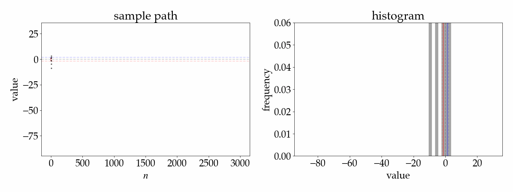
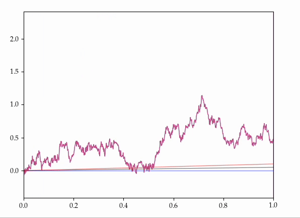

Preprints
-
Coupling theory, optimal transport, and Strassen's theorem beyond regular orders
with Daniel Raban.
Submitted (2025+).
[abstract]
[arxiv]
-
Many results in probability (most famously, Strassen's theorem on stochastic domination), characterize some relationship between probability distributions in terms of the existence of a particular structured coupling between them.
Optimal transport, and in particular Kantorovich duality, provides a framework for formally unifying these results, but the standard duality theory requires topological conditions that are not satisfied in some settings.
In this work, we investigate the extent to which Kantorovich duality still provides meaningful connections between distributional relations and their coupling counterparts, in the topologically irregular setting.
Towards this end, we show that Strassen's theorem "nearly holds" for topologically irregular orders but that the full theorem admits counterexamples.
The core of the proof is a novel technical result in optimal transport, which shows that the Kantorovich dual problem is well-behaved for optimal transport problems whose cost functions can be written as a non-increasing limit of lower semi-continuous functions.
-
Consistency and inconsistency in \(k\)-means clustering with Moïse Blanchard
and Nikita Zhivotovskiy.
Submitted (2025+).
[abstract]
[animation]
[arxiv]
-
A celebrated result of Pollard proves asymptotic consistency for \(k\)-means clustering when the
population distribution has finite variance. In this work, we point out that the population-level
\(k\)-means clustering problem is, in fact, well-posed under the weaker assumption of a finite
expectation, and we investigate whether some form of asymptotic consistency holds in this setting.
As we illustrate in a variety of negative results, the complete story is quite subtle; for example,
the empirical \(k\)-means cluster centers may fail to converge even if there exists a unique set of
population \(k\)-means cluster centers. A detailed analysis of our negative results reveals that
inconsistency arises because of an extreme form of cluster imbalance, whereby the presence of
outlying samples leads to some empirical \(k\)-means clusters possessing very few points. We then
give a collection of positive results which show that some forms of asymptotic consistency, under
only the assumption of finite expectation, may be recovered by imposing some a priori degree of
balance among the empirical \(k\)-means clusters.
-

-
Constrained denoising, empirical Bayes, and optimal transport with Nikolaos
Ignatiadis and Bodhisattva Sen.
Submitted (2025+).
[abstract]
[arxiv]
[code]
-
In the statistical problem of denoising, Bayes and empirical Bayes methods can "overshrink" their output relative to the latent variables of interest. This work is focused on constrained denoising problems which mitigate such phenomena. At the oracle level, i.e., when the latent variable
distribution is assumed known, we apply tools from the theory of optimal transport to characterize
the solution to (i) variance-constrained, (ii) distribution-constrained, and (iii) general-constrained denoising problems. At the empirical level, i.e., when the latent variable distribution is not
known, we use empirical Bayes methodology to estimate these oracle denoisers. Our approach is
modular, and transforms any suitable (unconstrained) empirical Bayes denoiser into a constrained empirical Bayes denoiser. We prove explicit rates of convergence for our proposed methodologies,
which both extend and sharpen existing asymptotic results that have previously considered only variance constraints. We apply our methodology in two applications: one in astronomy concerning the relative chemical abundances in a large catalog of red-clump stars, and one in baseball concerning minor- and major league batting skill for rookie players.
-
Large deviations principle for Bures-Wasserstein barycenters
with Leonardo Santoro.
Submitted (2025+).
[abstract]
[arxiv]
- We prove the large deviations principle for
empirical Bures-Wasserstein barycenters of independent, identically-distributed samples of covariance matrices and covariance operators. As an application, we explore some consequences of our results for the phenomenon of dimension-free concentration of measure for Bures-Wasserstein barycenters. Our theory reveals a novel notion of exponential tilting in the Bures-Wasserstein space, which, in analogy with Cramér's theorem in the Euclidean case, solves the relative entropy projection problem under a constraint on the barycenter. Notably, this method of proof is easy to adapt to other geometric settings of interest; with the same method, we obtain large deviations principles for empirical barycenters in Riemannian manifolds and the univariate Wasserstein space, and we obtain large deviations upper bounds for empirical barycenters in the general multivariate Wasserstein space. In fact, our results are the first known large deviations principles for Fréchet means in any non-linear metric space.
-
Fréchet means in infinite dimensions.
Submitted (2025+).
[abstract]
[arxiv]
-
While there exists a well-developed asymptotic theory of Fréchet means of random variables taking values in a general "finite-dimensional" metric space, there are only a few known results in which the random variables can take values in an ``infinite-dimensional'' metric space.
Presently, show that a natural setting for the study of probabilistic aspects of Fréchet means is that of metric spaces which admit a suitably powerful notion of "weak convergence".
This allows us to recover, strengthen, and generalize virtually all known asymptotic theory for Fréchet means; in particular, we expand the possible geometric settings where such theorems can be applied, we reduce the moment assumptions to the provably minimal possible, and we completely remove assumption about uniquenesss.
We also analyze many examples.
Publications
-
Asymptotic theory of geometric and adaptive \(k\)-means clustering.
Annals of Statistics. 53(4): 1559-1586.
[abstract]
[arxiv]
[journal]
- We revisit Pollard's classical
result on consistency for \(k\)-means clustering in Euclidean space, with a focus on
extensions in two directions: first, to problems where the data may come from interesting
geometric settings (e.g., Riemannian manifolds, reflexive Banach spaces, or the Wasserstein space);
second, to problems where some parameters are chosen adaptively from the data
(e.g., \(k\)-medoids or elbow-method \(k\)-means). Towards this end, we provide a general
theory which shows that all clustering procedures described above are strongly consistent.
In fact, our method of proof allows us to derive many asymptotic limit theorems beyond
strong consistency. We also remove all assumptions about uniqueness of the set of
optimal cluster centers.
-
Fréchet mean set estimation in the Hausdorff metric, via relaxation with Moïse Blanchard.
Bernoulli. 31(1), 432-456.
[abstract]
[arxiv]
[code]
[journal]
- T
This work resolves the following question in non-Euclidean statistics:
Is it possible to consistently estimate the Fréchet mean set of an unknown population
distribution, with respect to the Hausdorff metric, when given access to independent
identically-distributed samples? Our affirmative answer is based on a careful analysis of
the "relaxed empirical Fréchet mean set estimators" which identify the set of near-minimizers
of the empirical Fréchet functional and where the amount of "relaxation" vanishes as the
number of data tends to infinity. On the theoretical side, our results include exact descriptions
of which relaxation rates give weak consistency and which give strong consistency, as well as
a description of an estimator which (assuming only the finiteness of certain moments and a mild condition on the metric entropy of the underlying metric space) adaptively finds the fastest possible
relaxation rate for strongly consistent estimation. On the applied side, we consider the
problem of estimating the set of Fermat-Weber points of an unknown distribution in the
space of equidistant trees endowed with the tropical projective metric; in this setting,
we provide an algorithm that provably implements our adaptive estimator, and we apply this
method to real phylogenetic data.
-
Constructing maximal germ couplings of Brownian motions with drift with Sebastian Hummel.
Electronic Communications in Probability. 29, 1-11.
[abstract]
[animation]
[arxiv]
[journal]
-

- Consider all the possible ways of coupling together two Brownian motions with the same starting position but with different drifts onto the same probability space.
It is known that there exist couplings which make these processes agree for some random, positive, maximal initial length of time.
Presently, we provide an explicit, elementary construction of such couplings.
-
Limit theorems for Fréchet mean sets with Steve N. Evans.
Bernoulli. 30(1), 419-447.
[abstract]
[arxiv]
[journal]
- For \(1\le p \le \infty\), the Fréchet \(p\)-mean of a probability measure on a metric space is an important notion of central tendency that generalizes the usual notions in the real line of mean (\(p=2\)) and median (\(p=1\)).
In this work we prove a collection of limit theorems for Fréchet means and related objects, which, in general, constitute a sequence of random closed sets.
On the one hand, we show that many limit theorems (a strong law of large numbers, an ergodic theorem, and a large deviations principle) can be simply descended from analogous theorems on the space of probability measures via purely topological considerations.
On the other hand, we provide the first sufficient conditions for the strong law of large numbers to hold in a \(T_2\) topology (in particular, the Fell topology), and we show that this condition is necessary in some special cases.
We also discuss statistical and computational implications of the results herein.
-
A strong duality principle for equivalence couplings and total variation.
Electronic Journal of Probability. 28, 1-33
[abstract]
[arxiv]
[journal]
- We introduce and study a notion of duality for two classes of optimization problems commonly occurring in probability theory.
That is, on an abstract measurable space \((\Omega,\mathcal{F})\), we consider pairs \((E,\mathcal{G})\) where \(E\) is an equivalence relation on \(\Omega\) and \(\mathcal{G}\) is a sub-\(\sigma\)-algebra of \(\mathcal{F}\); we say that \((E,\mathcal{G})\) satisfies "strong duality" if \(E\) is \((\mathcal{F}\otimes\mathcal{F})\)-measurable and if for all probability measures \(\mathbb{P},\mathbb{P}'\) on \((\Omega,\mathcal{F})\) we have
\[
\max_{A\in\mathcal{G}}\vert \mathbb{P}(A)-\mathbb{P}'(A)\vert = \min_{\tilde{\mathbb{P}}\in\Pi(\mathbb{P},\mathbb{P}')}(1-\tilde{\mathbb{P}}(E)),
\]
where \(\Pi(\mathbb{P},\mathbb{P}')\) denotes the space of couplings of \(\mathbb{P}\) and \(\mathbb{P}'\), and where
"max" and "min" assert that the supremum and infimum are in fact achieved.
The results herein give wide sufficient conditions for strong duality to hold, thereby extending a form of Kantorovich duality to a class of cost functions which are irregular from the point of view of topology but regular from the point of view of descriptive set theory.
The given conditions recover or strengthen classical results, and they have novel consequences in stochastic calculus, point process theory, and random sequence simulation.
-
Virtual Markov chains with Steve N. Evans.
New Zealand Journal of Mathematics (Vaughan Jones Memorial Issue). 52, 511–559.
[abstract]
[arxiv]
[journal]
- We introduce the space of virtual Markov chains (VMCs) as a projective limit of the spaces of all finite state space Markov chains (MCs), in the same way that the space of virtual permutations is the projective limit of the spaces of all permutations of finite sets. We introduce the notions of virtual initial distribution (VID) and a virtual transition matrix (VTM), and we show that the law of any VMC is uniquely characterized by a pair of a VID and VTM which have to satisfy a certain compatibility condition. Lastly, we study various properties of compact convex sets associated to the theory of VMCs, including that the Birkhoff-von Neumann theorem fails in the virtual setting.